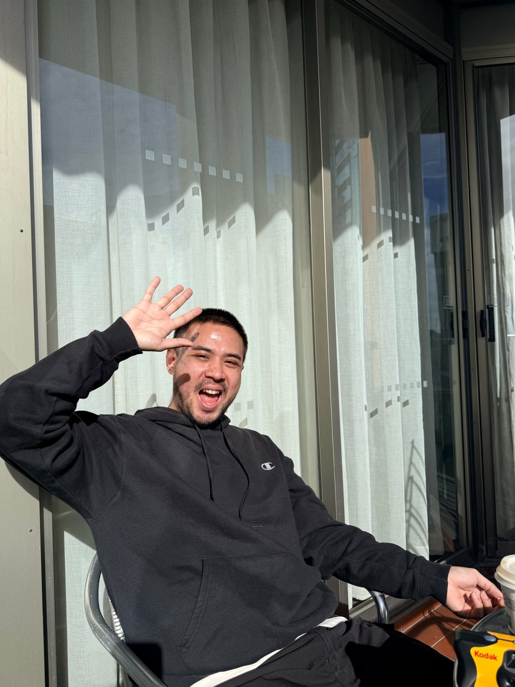

This was inspired by my last road trip in Victoria. Fresh air, a clean river, birds flocking to the benches. Just people enjoying whatever the surroundings had to offer. And somehow, my first thought was, as it always is: “Oh, that's got to be a perfect spot to smoke a cig.”
But from all these folks, the only smoke that came was from the nearby meat shop. Everyone else was simply doing things: reading, licking ice cream, sipping coffee, or just breathing in the fresh air. Why wouldn't I?

The one who could just stop
I was travelling with my love (she also smokes: smoking hot, and smokes a cig), and we talked about it. I noticed she'd been smoking much less during the trip. She said she could just stop cold turkey, smoking included. That's one of the things I adore about her. Me? I'm well aware I don't have that kind of discipline.
From that scenery, and from that conversation with my partner, I made a choice: I want to enjoy things without having to smoke so much.
The honest numbers
Right now, I smoke about a pack a day — roughly twenty cigarettes — and honestly, that's concerning. I knew quitting cold turkey wasn't realistic for me. So I had a simpler thought: what if I could get from one pack a day to one pack every three days?
Then the real question: how do I make this journey interesting?
First, I want to be aware of how much I smoke: today, this week, this month, this year.
Second, logging it should be effortless. No complicated setup, no hunting through menus. Just tap, log, and move on.
Third, and the big one: how do I make it fun? it should be fun. What if I could build a little ecosystem? Small rewards when I keep my goal, gentle setbacks when I don't?
A tribute to a place
So here it is. I wanted to make a tribute to Halls Gap: the place that gave me that sudden moment of clarity, by recreating a little version of that scenery inside an app. Something to remind me of the promise I made to myself.
Keep the little forest growing
Still Here is made by one person, in my spare time, and it's completely free: no ads, no subscription, no catch. If it helps you even a little, a coffee or cendol helps keep the little forest growing. No pressure, though. Using it, sharing it, or simply telling a friend already means a lot.
If any of this sounds like you, come plant your first day. It's free, there are no ads, and it grows the moment you tap.